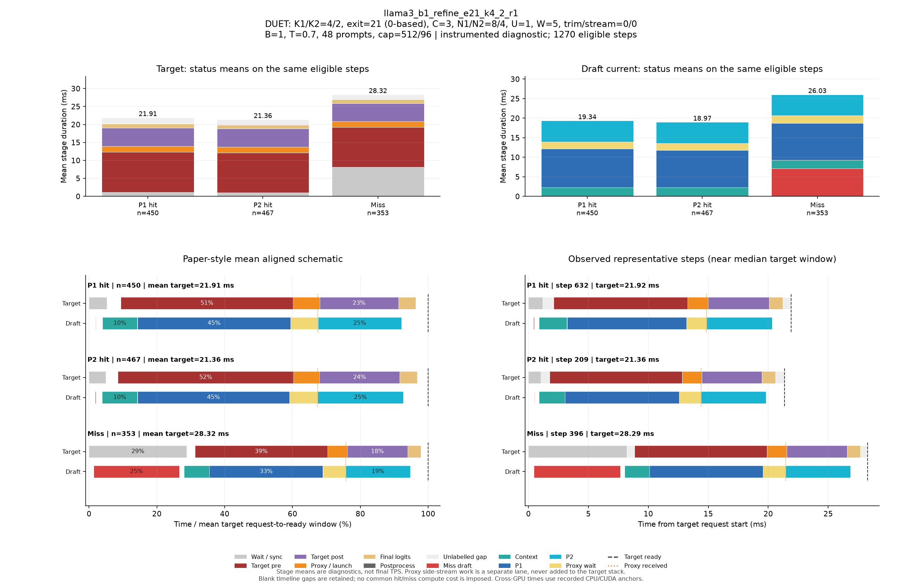

DUET: K1/K2=4/2, exit=21 (0-based), C=3, N1/N2=8/4, U=1, W=5, trim/stream=0/0
| Pass | 용도 | N | B | T | Seed | AL* | Cache hit | TPS* | Raw TPS |
|---|---|---|---|---|---|---|---|---|---|
| 0 | profile-diagnostic | 48 | 1 | 0.7 | 5100 | 2.571 | 71.95% | 90.24 | 87.43 |
Input/output cap: 512/96 · GPUs: 4,5 · draft seed: 0 · source: a3298235676eb40edcdc2f6805b99485ac33e126
PNG · 벡터 PDF · 원본 결과 JSON
세부 trace: 1270 eligible steps. Target 원본 · Draft 원본
제외 수: {"initial": 19, "output_boundary": 45, "capture_or_next": 10}
왼쪽 아래는 상태별 평균 정렬 schematic, 오른쪽 아래는 실제 대표 step입니다. %의 분모는 각 상태의 평균 target request→ready 시간이며 phase overlap은 별도 lane에 표시합니다.

{
"args": {
"target": "/data/chokwans99/models/layerskip-llama3-8B",
"draft": "/home/chokwans99/models_mlsys/Qwama-0.5B-Instruct",
"mode": "duet-tree",
"batches": [
1
],
"temperatures": [
0.7
],
"seeds": [
5100
],
"target_tp": 1,
"prompts": "/home/chokwans99/PSD-mlsys-coverage/results/mlsys_coverage/round5/tuning48.json",
"limit": 0,
"max_new_tokens": 96,
"max_model_len": 2048,
"input_cap": 512,
"k1": 4,
"k2": 2,
"draft_fan_out": 2,
"proxy_fan_out": 1,
"p1_tree": true,
"p1_verify_nodes": null,
"p2_verify_nodes": null,
"exit_layer": 21,
"p1_nodes": 8,
"p2_nodes": 4,
"tree_width": 3,
"p1_roots": 1,
"p2_budget": null,
"tree_root_count": null,
"tree_beta": 0.5,
"tree_proxy_threshold": 0.01,
"tree_conf_threshold": 0.03,
"root_source": "complement",
"root_normalization": "full",
"root_overlap_mix": 0.25,
"memory_fraction": 0.45,
"ignore_eos": false,
"greedy_only": false,
"audit_preemption": false,
"ragged_limits": false,
"tree_calibration_dir": null,
"preflight_test": null,
"output": "/home/chokwans99/PSD-mlsys-coverage/results/mlsys_coverage/round5/llama3_b1_refine_retry/llama3_b1_refine_e21_k4_2_r1.json"
},
"engine_kwargs": {
"num_gpus": 2,
"max_num_seqs": 1,
"max_model_len": 2048,
"max_num_batched_tokens": 2048,
"gpu_memory_utilization": 0.45,
"speculate": true,
"draft_async": true,
"greedy_only": false,
"jit_speculate": true,
"speculate_k": 6,
"async_fan_out": 3,
"duet_p1_tree_policy": "on",
"duet_p2_tree_policy": "on",
"draft": "/home/chokwans99/models_mlsys/Qwama-0.5B-Instruct",
"duet_enabled": true,
"duet_exit_layer": 21,
"duet_phase1_k": 4,
"duet_phase2_k": 2,
"duet_draft_fan_out": 2,
"duet_p2_tree_max_nodes": 4,
"duet_p2_tree_verify_nodes": 4,
"duet_p1_tree_max_nodes": 8,
"duet_p1_tree_verify_nodes": 8,
"duet_tree_c_tensor": 3,
"duet_p1_roots_per_position": 1,
"duet_p2_budget": null,
"duet_tree_root_count": null,
"duet_tree_beta": 0.5,
"duet_tree_proxy_threshold": 0.01,
"duet_tree_conf_threshold": 0.03,
"duet_root_source": "complement",
"duet_root_normalization": "full",
"duet_root_overlap_mix": 0.25
},
"env": {
"CUDA_VISIBLE_DEVICES": "4,5",
"SSD_CUDA_ARCH": "8.9",
"SSD_ATTN_BACKEND": "auto",
"SSD_DIST_PORT": "29801",
"OMP_NUM_THREADS": "4",
"SSD_SEED": "0",
"SSD_CHAIN_PROXY_GRAPH": "1",
"SSD_FAST_VERIFY": "1",
"SSD_BATCHED_PROXY_GRAPH": "1",
"SSD_DUET_EXIT_REPLICA": "0",
"SSD_ASYNC_PROXY_SEND": "1",
"SSD_PROXY_STREAM": "0",
"SSD_BATCHED_TREE": "1",
"SSD_TREE_EXPANSION_POLICY": "reach_gain_frontier",
"SSD_TREE_REACH_CALIBRATION": "/home/chokwans99/PSD-mlsys-coverage/results/mlsys_coverage/round4/calibration/reach.json",
"SSD_TREE_GAIN_CALIBRATION": "/home/chokwans99/PSD-mlsys-coverage/results/mlsys_coverage/round4/calibration/gain.json",
"SSD_DUET_MISS_K": "4",
"SSD_TREE_FUSED_MATH": "1",
"SSD_BATCH_TREE_BULK_EXPORT": "1",
"SSD_TREE_PARALLEL_INSERT": "0",
"SSD_PROFILE_DUET": "1",
"SSD_PROFILE_DUET_MAX_EVENTS": "100000",
"SSD_TREE_SHAPE_METRICS": "1",
"SSD_PROFILE_DIR": "/home/chokwans99/PSD-mlsys-coverage/results/mlsys_coverage/round5/profiles/llama3_b1_refine_e21_k4_2_r1",
"SSD_HF_CACHE": "/data/chokwans99/models",
"SSD_DATASET_DIR": "/home/chokwans99/PSD-mlsys-coverage/results/mlsys_coverage/round5"
},
"effective_features": {
"fast_verify": true,
"batched_proxy_graph": true,
"exit_replica": false,
"jit_speculate": true,
"duet_jit_short": true,
"miss_depth": 4,
"miss_width": 1,
"tree_fused_math": true,
"tree_parallel_insert": false,
"bulk_export": true
},
"resolved_env": {
"SSD_CUDA_ARCH": "8.9",
"SSD_ATTN_BACKEND": "auto",
"SSD_DIST_PORT": "29801",
"SSD_SEED": "0",
"SSD_CHAIN_PROXY_GRAPH": "1",
"SSD_FAST_VERIFY": "1",
"SSD_BATCHED_PROXY_GRAPH": "1",
"SSD_DUET_EXIT_REPLICA": "0",
"SSD_ASYNC_PROXY_SEND": "1",
"SSD_PROXY_STREAM": "0",
"SSD_BATCHED_TREE": "1",
"SSD_TREE_EXPANSION_POLICY": "reach_gain_frontier",
"SSD_TREE_REACH_CALIBRATION": "/home/chokwans99/PSD-mlsys-coverage/results/mlsys_coverage/round4/calibration/reach.json",
"SSD_TREE_GAIN_CALIBRATION": "/home/chokwans99/PSD-mlsys-coverage/results/mlsys_coverage/round4/calibration/gain.json",
"SSD_DUET_MISS_K": "4",
"SSD_TREE_FUSED_MATH": "1",
"SSD_BATCH_TREE_BULK_EXPORT": "1",
"SSD_TREE_PARALLEL_INSERT": "0",
"SSD_PROFILE_DUET": "1",
"SSD_PROFILE_DUET_MAX_EVENTS": "100000",
"SSD_TREE_SHAPE_METRICS": "1",
"SSD_PROFILE_DIR": "/home/chokwans99/PSD-mlsys-coverage/results/mlsys_coverage/round5/profiles/llama3_b1_refine_e21_k4_2_r1",
"SSD_HF_CACHE": "/data/chokwans99/models",
"SSD_DATASET_DIR": "/home/chokwans99/PSD-mlsys-coverage/results/mlsys_coverage/round5",
"SSD_FORCE_SPLIT_K1K2": "1",
"SSD_DUET_JIT_SHORT": "1",
"SSD_SHM_NAME": "ssd_2412327"
},
"runtime_source_sha256": {
"ssd/ssd/__init__.py": "f1a221b38f55b42ef0619cba48a411acbbd1965c4845b4643f77443b7ce77950",
"ssd/ssd/config.py": "ec9ffe1c84257a2e2ec10c39995340f8941f9f3c400c48c18cfa7c3e4db3b220",
"ssd/ssd/engine/block_manager.py": "05d873619b419d31f47b4be4025bc7c9f11759f5f0bc3f65fbff3a1e8f94660a",
"ssd/ssd/engine/draft_runner.py": "cdf793b4718e576bcc10a638fcff577eef9cf21cc1f38a9fc27c333c3cfe5cee",
"ssd/ssd/engine/helpers/batch_tree_common.py": "739feeb975c20d0adbdae51735b8983aa6cae8b59d6237b285db0c766d558f27",
"ssd/ssd/engine/helpers/batch_tree_draft.py": "f361030685350183884cc55b9058945515bb00da53fc86541f7902bfd2138528",
"ssd/ssd/engine/helpers/batch_tree_forward.py": "0c6079d2bdbf7ecc000b2a98b94b49b1942939d34ada80b15f57510de8a20940",
"ssd/ssd/engine/helpers/batch_tree_inputs.py": "c0a05d13ba0e63ecbc920425ddd6a98dc60001d93d73085e75d2d4a9b110a066",
"ssd/ssd/engine/helpers/batch_tree_roots.py": "ad3c4e772392c1043284ac4912d606543f3fd76167135b73e4f72a700e6820c7",
"ssd/ssd/engine/helpers/batch_tree_sampling.py": "46f36658cb189bc080ae0d4b8561f84662290facacccf6600f129eb6e93ee66b",
"ssd/ssd/engine/helpers/batch_tree_verify.py": "2da945efe3ba4b2673377a2f5c497528ab0c6cf4d7fd7edfbdb23b6c9c619ede",
"ssd/ssd/engine/helpers/batched_proxy.py": "6ed4f9b85ff8cf9c24b7ad43a1b7377d08123eeef5307366a373dacda184da86",
"ssd/ssd/engine/helpers/batched_tree_executor.py": "098d64cad2d20d96091631f6bc91da73b1e893ec400c3431a4ed68d007a9ef45",
"ssd/ssd/engine/helpers/cudagraph_helpers.py": "0436aec61d05d0b79696a48665042e364f3f4c50d853b68dc424e435b54be0c9",
"ssd/ssd/engine/helpers/e0_trace.py": "23ecd9bce2587cbef3f99c8894964c0d9642d33d372bd7be4954a5a2840a142e",
"ssd/ssd/engine/helpers/mask_helpers.py": "8ada4e709a6ab310ee920a7176b3684f89860022fc659442f6cb02ed5fb87d88",
"ssd/ssd/engine/helpers/p1_tree.py": "f48ae6b01e593d2598262b34007a6b58dde9e57e94138dde62f81d5526637398",
"ssd/ssd/engine/helpers/p2_tree.py": "73b0a512d834ab3a4608d9cd898b13b32630dd3b914b49e753c1116ac0640b41",
"ssd/ssd/engine/helpers/p2_tree_executor.py": "cfb04f959fd08baf3819a688a907cac4e3071a2727085ea08ca089b50a21e82e",
"ssd/ssd/engine/helpers/packed_tree_forward.py": "b903d6fe4d1fe18f95f6540f488acf40d469154100239429256eace61b1d7e76",
"ssd/ssd/engine/helpers/packed_verify.py": "a50ff24e93324840783b60102bfaeb3786711f05f64bd897708c779535c1820f",
"ssd/ssd/engine/helpers/root_policy.py": "5e3a8e2f9b2fe43fec52eb9e80fe59cb0d28177122f7e75c823c5ffd20aee718",
"ssd/ssd/engine/helpers/runner_helpers.py": "bfb570d8e018ee296a6c2a8c3c9e75919fd0eb1beb288ceb80121ad116419bf2",
"ssd/ssd/engine/helpers/speculate_types.py": "2929b5f3a176d04b6a4b01f092b224ad733dfda10a647bb73801cd346441ae91",
"ssd/ssd/engine/helpers/tree_expansion_policy.py": "47f818d1b8f284e56813af294723f6a934c3da0502b9ae4e611b54ba6fb85dac",
"ssd/ssd/engine/helpers/tree_fused_math.py": "930a1215363a3b6f878cbc4a71c3f59293f46aa2eab3c4938e5bb51e95868d2e",
"ssd/ssd/engine/helpers/tree_gain_allocation.py": "6f32c6a7b69272c1b42992d95c546bfd3980ccd71af3b3346e9df61977907b6a",
"ssd/ssd/engine/helpers/tree_host_topology.py": "86d0deab4da2932540a108c4c2b3560b8634837e71ba23783375c2001e4cf81c",
"ssd/ssd/engine/helpers/tree_layout.py": "4e5e47c54a4efd5a30ae8c528e1d2d9493d12aa5605c0e65c2f86ba874805be1",
"ssd/ssd/engine/helpers/tree_rerank_gpu.py": "e4a8bff8828f983d6eb407504f87f2a9edf08a1750449fe46565e661f892b734",
"ssd/ssd/engine/helpers/tree_topology_gpu.py": "3a6cf8796faabbe8adef56deedf8956c1cf252a31e0491f3b71a8544bdcf89af",
"ssd/ssd/engine/llm_engine.py": "b0081876ef6470f91fa562acc0317074a85afa9aec8322182bda7749153db00f",
"ssd/ssd/engine/model_runner.py": "5fa9e910f38538c276a151113fc490be9c75ae9af2bf35ba6eaa5513b237a421",
"ssd/ssd/engine/scheduler.py": "52a36e8bb2abc26f775562a39bd95ea6cc8c70650e6193ddaa0fad762afb8ae4",
"ssd/ssd/engine/sequence.py": "6894715ef142074b118bfa3018b10826d2748518e9c8b71291064eb99fae9bd9",
"ssd/ssd/engine/speculator_async.py": "cd16395d5e5d7380d29f5a27e1495b6a40758c0452ce2cb40d996e2c3271c114",
"ssd/ssd/engine/speculator_sync.py": "30487afa7f5027735ebd752ca1a53003f1d56350f503ea91931ef64e7aab115e",
"ssd/ssd/engine/step.py": "525d3022561c9eee96ec076032bb27e281af744feb739ddc17e52344a9cafe8f",
"ssd/ssd/engine/verifier.py": "f6795547f278628312d2dd5ab0a28e9f34489b8e6d02038566a65fa3190a0928",
"ssd/ssd/layers/activation.py": "13d88b460e7610df28c6a7c719dd8bf21c5c59ae0f85c94d505d499215618a82",
"ssd/ssd/layers/attention.py": "bbafa69d9b52dedf81542f2c3227b7f061de11c679a6681a16b0c137ccfc672b",
"ssd/ssd/layers/embed_head.py": "b896a56b908d75c8f30462b0b1a4ce634276ddb41165fdaa0220c55a2ddf7257",
"ssd/ssd/layers/fi_attn.py": "4b0a275d020c1c3ce37f4e2a6c04bff12577d6f11feec7d79959652300fc9a0c",
"ssd/ssd/layers/layernorm.py": "a076c8d2e31d2597119d8504a69afd8711b41a29b5ccb7e1bf111a6c7277400e",
"ssd/ssd/layers/linear.py": "82c096262013516c5f0a43f7c28f23aa6db6b14f52cbe1ce1dacc5f9d5c4b0b6",
"ssd/ssd/layers/rotary_embedding.py": "1bcca21cf5e4d81c11a5c55d59a6033874c4e6a0003cc4ae8e1aa6165976a723",
"ssd/ssd/layers/sampler.py": "df22591a229ae5c2f62d4797707470ebccb8e55f7064577bc24a656ed797f213",
"ssd/ssd/llm.py": "496950f31428f674b70e8e137e029aa16dd82fdc8d8b8cc76f9ebdce86f7f653",
"ssd/ssd/models/eagle3_draft_llama3.py": "0d6e713a419cf884fc85984f9a2a6de520119032075a7c99158e0df7e2faca84",
"ssd/ssd/models/llama3.py": "ac801bd73e999f04a6fc862ca1d49bc94c88315456cfb6cb1215a503bcc5e07d",
"ssd/ssd/models/qwen2.py": "6804e3662a173368632e5f05b9893cc0cd28a61ac9bd25dbe8cd6f387ca0d1ca",
"ssd/ssd/models/qwen3.py": "535495bf69933fd9c677275453b801189e2c3c78a94fcc5133fc65b88c9f69c7",
"ssd/ssd/paths.py": "72c52420daaf6d457c60235617efc3f8b1e3ae208a35f3bc45438adc9d7e01ac",
"ssd/ssd/quant/__init__.py": "a69f0de0a516ba2bf9e13680b75b8f5d538c2eb281b095662ed1515f8b0f8698",
"ssd/ssd/quant/adapter.py": "fbb1ce4a198a585c31b0102555d1f84d18b09b0de1b90a5808d93ec8ff7ac271",
"ssd/ssd/quant/awq_calibrate.py": "116807eca0a3e4e001aa24a3344031416e4060a6c1b2e39f59829fba09484126",
"ssd/ssd/quant/build.py": "37f9c72ac69af213f2720c86faf380b8a46baaad0b98bf5f2e3c7fa9b3fbc43c",
"ssd/ssd/quant/config.py": "080c327b2297d0905f8fddc8d994aa7b9dc1086d7703d951471d48cea8723a1d",
"ssd/ssd/quant/importer.py": "c8990b69bc9e4e152e7e80b7f08f273c6a4652c1f7e95a8247f85e50030f4f92",
"ssd/ssd/quant/init_context.py": "6aa3dc3f6e95d8902fa7244d0010110b6fcf1ffdccedd6eaa389204339fc214f",
"ssd/ssd/quant/io.py": "f44f98a57351ff1063b7423d2f8390a565a30796fd6c3beaeaa8825f906e66b5",
"ssd/ssd/quant/loader.py": "14f901b1f53a3650be7eff497f626469e2b1fbc487202c639d33c8dd4c9047fb",
"ssd/ssd/quant/marlin.py": "4f1996e9f63d7109e92a3a7ec5350069ba67d7659f2149e99b84ca3c6626b241",
"ssd/ssd/quant/marlin_utils.py": "f64ec8d7ec8260556abd21e229567971a928882f14b93d288a6732d55c12fc90",
"ssd/ssd/quant/naming.py": "7ba73900af5e6d6fa2d1907bd2611625fc72f28a1fb9ea4834cd9a45901632d6",
"ssd/ssd/quant/pack.py": "b7dd683b7cdbfbb6f4ce1e13a51a72240a8dc3a35b7ed652dc664d26bb384711",
"ssd/ssd/quant/state.py": "82cb1050a3b1776765df7ad8f6c59c23a86ac8d1d4cc3c974cded7f8e762f806",
"ssd/ssd/sampling_params.py": "7f79868c4ca115bb18e017411a6c5545f354aa858aa0b8076aafb756d0785032",
"ssd/ssd/utils/async_helpers/async_spec_helpers.py": "0d70779098c5051fcba5d3add5ff0b7896139f1b7789babe701a8df6eaa40f24",
"ssd/ssd/utils/async_helpers/duet_policy.py": "1fb3e1ec1c41a9cda5f531f8c732b09145c7d87ea79d74c331b8176f11f22aaf",
"ssd/ssd/utils/async_helpers/nccl_pack.py": "6330e785f3e81acffe25a82061d3098f7834ad3c2d07bb071d79ed9923b18dc1",
"ssd/ssd/utils/async_helpers/tests.py": "6491ced36a2a6f06d8cf411204b1190d2ca0bc700cd0becf79c3f4cd8abcd87e",
"ssd/ssd/utils/context.py": "ce55eb45f00c91412946dd1c96f5c8f972372dd4c8069770c48e120773f301fc",
"ssd/ssd/utils/int8_debug.py": "9a71dbf2b997a9c8d9b776cc3659c8dbf32ce5411eb5cedb4a73368cee60d3d7",
"ssd/ssd/utils/loader.py": "c008eac34810772e8d9f51da896c00867481f3e1a0e6f725e0d06599c0aab59e",
"ssd/ssd/utils/misc.py": "1084b630f174d651b78b01c4ba2dff147f18d3cf52a200704b4b9eab2b72b66c",
"ssd/ssd/utils/quantize.py": "c0ee73d55f3781eba88007325d5e9e53e66ad952e0e8f19143aa8c50bc39f406",
"ssd/ssd/utils/verify.py": "0cf11b9ba19a73e9c39087fccde43071464c6f3b964e00081ebadc747ef142a4",
"ssd/ssd/utils/verify_fast.py": "23b05b7e5032fe72c8f2ef5bd7a69aa874818b08b52ea7fc0344a54c76ea28d9",
"ssd/bench/mlsys_campaign.py": "059b6316ba33e867e1fcf099a8180c186fa70b916692eca386d2a4a347b0f26f",
"ssd/bench/mlsys_coverage.py": "70b2afaf05bbbd5760c2a4f96f801976479209ca1d7a8f9eb8598139e686bdbc",
"ssd/bench/mlsys_greedy_audit.py": "b9815fd03ded7f30f7c0408629782156e73f5ceaab9f0b3b720956f5c00da141",
"ssd/bench/mlsys_preemption_audit.py": "f891ff5a69a59fb8c93e7952f9d48ac16adb7fef074763089f14d4505ecad80d",
"ssd/bench/mlsys_summarize.py": "0235aa2b56eb59c41c429351d77e90e16c52ccdf58c43e3578dd03df0f6095bd",
"ssd/bench/mlsys_tree_observer.py": "8c18248c9ef1953e2e821613099f14d155978540536939288d4fb2aa897c6263",
"ssd/bench/mlsys_verify_bench.py": "3ddc36197874d239f41a1c135570d4d7a0940d615d3d396299bae46e377bce2e"
}
}{
"groups": [
{
"status": "P1 hit",
"n": 450,
"mean_target_ms": 21.90888024383121,
"mean_decode_ms": 21.95240684784949,
"mean_intervals": [
{
"lane": "Draft current",
"label": "Context",
"start": 0.868320919142829,
"end": 3.1013764741685654
},
{
"lane": "Draft current",
"label": "Miss draft",
"start": 0.4073736376232571,
"end": 0.44785108460320366
},
{
"lane": "Draft current",
"label": "P1",
"start": 3.1228944730758665,
"end": 13.021570699479845
},
{
"lane": "Draft current",
"label": "P2",
"start": 14.777653600374858,
"end": 20.190288134680856
},
{
"lane": "Draft current",
"label": "Proxy wait",
"start": 13.023808102077908,
"end": 14.775959807501899
},
{
"lane": "Target",
"label": "Final logits",
"start": 19.985577273368836,
"end": 21.102937299410502
},
{
"lane": "Target",
"label": "Postprocess",
"start": 21.8898068857193,
"end": 21.90888024383121
},
{
"lane": "Target",
"label": "Proxy / launch",
"start": 13.190239838494195,
"end": 14.89929363409678
},
{
"lane": "Target",
"label": "Target post",
"start": 14.901162112553914,
"end": 19.983653466436596
},
{
"lane": "Target",
"label": "Target pre",
"start": 2.03899202187856,
"end": 13.188378913137647
},
{
"lane": "Target",
"label": "Wait / sync",
"start": 0.0,
"end": 1.1492610830730863
}
],
"components": [
{
"lane": "Draft current",
"label": "Context",
"mean_ms": 2.2330555550257363,
"present_steps": 450,
"population": 450
},
{
"lane": "Draft current",
"label": "Miss draft",
"mean_ms": 0.04047744697994656,
"present_steps": 450,
"population": 450
},
{
"lane": "Draft current",
"label": "P1",
"mean_ms": 9.898676226403978,
"present_steps": 450,
"population": 450
},
{
"lane": "Draft current",
"label": "P2",
"mean_ms": 5.4126345343059965,
"present_steps": 450,
"population": 450
},
{
"lane": "Draft current",
"label": "Proxy wait",
"mean_ms": 1.7521517054239908,
"present_steps": 450,
"population": 450
},
{
"lane": "Target",
"label": "Final logits",
"mean_ms": 1.1173600260416667,
"present_steps": 450,
"population": 450
},
{
"lane": "Target",
"label": "Postprocess",
"mean_ms": 0.01907335811191135,
"present_steps": 450,
"population": 450
},
{
"lane": "Target",
"label": "Proxy / launch",
"mean_ms": 1.7090537956025866,
"present_steps": 450,
"population": 450
},
{
"lane": "Target",
"label": "Target post",
"mean_ms": 5.082491353882683,
"present_steps": 450,
"population": 450
},
{
"lane": "Target",
"label": "Target pre",
"mean_ms": 11.149386891259088,
"present_steps": 450,
"population": 450
},
{
"lane": "Target",
"label": "Unlabelled gap",
"mean_ms": 1.6822537358601888,
"present_steps": 450,
"population": 450
},
{
"lane": "Target",
"label": "Wait / sync",
"mean_ms": 1.1492610830730863,
"present_steps": 450,
"population": 450
}
],
"mean_markers": {
"Final logits": 21.102937299410502,
"Target ready": 21.90888024383121,
"Proxy received": 14.776991682052612
},
"representative": {
"step_id": 632,
"status": "P1 hit",
"target_ms": 21.917967796325684,
"decode_ms": 21.96138398721814,
"source_counts": {
"1": 1
},
"physical_queries": 9,
"max_valid_nodes": 8,
"unlabelled_target_ms": 1.6367182731628418,
"intervals": [
{
"label": "Wait / sync",
"start": 0.0,
"end": 1.1699209213256836,
"lane": "Target",
"original_label": "target_spec_wait"
},
{
"label": "Target pre",
"start": 2.1074209213256836,
"end": 13.277342796325684,
"lane": "Target",
"original_label": "batch_target_pre"
},
{
"label": "Proxy / launch",
"start": 13.279295921325684,
"end": 14.988281011581421,
"lane": "Target",
"original_label": "batch_target_proxy"
},
{
"label": "Target post",
"start": 14.992187023162842,
"end": 20.083983898162842,
"lane": "Target",
"original_label": "batch_target_post"
},
{
"label": "Final logits",
"start": 20.085937023162842,
"end": 21.203125,
"lane": "Target",
"original_label": "batch_target_final_logits"
},
{
"label": "Postprocess",
"start": 21.89453101158142,
"end": 21.917967796325684,
"lane": "Target",
"original_label": "target_postprocess"
},
{
"label": "Unlabelled gap",
"start": 1.1699209213256836,
"end": 2.1074209213256836,
"lane": "Target",
"original_label": "derived_gap"
},
{
"label": "Unlabelled gap",
"start": 13.277342796325684,
"end": 13.279295921325684,
"lane": "Target",
"original_label": "derived_gap"
},
{
"label": "Unlabelled gap",
"start": 14.988281011581421,
"end": 14.992187023162842,
"lane": "Target",
"original_label": "derived_gap"
},
{
"label": "Unlabelled gap",
"start": 20.083983898162842,
"end": 20.085937023162842,
"lane": "Target",
"original_label": "derived_gap"
},
{
"label": "Unlabelled gap",
"start": 21.203125,
"end": 21.89453101158142,
"lane": "Target",
"original_label": "derived_gap"
},
{
"label": "Miss draft",
"start": 0.4249908924102783,
"end": 0.4660069942474365,
"lane": "Draft current",
"original_label": "batch_miss_draft"
},
{
"label": "Context",
"start": 0.8917880058288574,
"end": 3.2081949710845947,
"lane": "Draft current",
"original_label": "batch_glue"
},
{
"label": "P1",
"start": 3.2355380058288574,
"end": 13.176944971084595,
"lane": "Draft current",
"original_label": "batch_p1_total"
},
{
"label": "Proxy wait",
"start": 13.178897857666016,
"end": 14.868350982666016,
"lane": "Draft current",
"original_label": "batch_proxy_wait"
},
{
"label": "P2",
"start": 14.870303869247437,
"end": 20.327334880828857,
"lane": "Draft current",
"original_label": "batch_p2_total"
}
],
"previous": [],
"markers": {
"Target ready": 21.917967796325684,
"Final logits": 21.203125,
"Proxy received": 14.866397857666016
}
},
"step_ids": [
20,
22,
27,
28,
29,
30,
32,
44,
47,
49,
51,
53,
57,
69,
75,
78,
79,
80,
82,
84,
89,
90,
91,
94,
95,
97,
99,
102,
107,
110,
111,
114,
115,
116,
117,
118,
119,
121,
122,
124,
126,
127,
132,
137,
138,
142,
147,
152,
156,
159,
160,
162,
163,
164,
167,
184,
186,
189,
192,
194,
195,
196,
197,
207,
208,
212,
214,
215,
216,
219,
221,
222,
223,
227,
232,
239,
245,
247,
248,
249,
253,
255,
258,
259,
262,
265,
269,
271,
281,
283,
285,
289,
290,
291,
293,
295,
296,
298,
299,
301,
302,
303,
304,
308,
310,
312,
316,
323,
324,
331,
334,
337,
341,
343,
345,
346,
352,
354,
355,
362,
363,
372,
380,
381,
383,
384,
385,
386,
387,
388,
390,
393,
409,
417,
418,
421,
424,
425,
426,
427,
428,
429,
430,
431,
432,
433,
436,
437,
446,
454,
457,
460,
463,
464,
469,
474,
478,
482,
493,
503,
506,
507,
509,
510,
516,
519,
521,
523,
529,
530,
531,
544,
547,
551,
554,
555,
556,
558,
560,
562,
567,
569,
572,
575,
577,
579,
580,
585,
590,
595,
597,
600,
602,
607,
609,
614,
617,
623,
624,
626,
632,
642,
643,
646,
648,
652,
656,
658,
659,
660,
661,
662,
663,
664,
665,
666,
667,
668,
669,
679,
680,
685,
687,
691,
692,
693,
695,
696,
698,
706,
707,
709,
712,
713,
715,
718,
719,
724,
729,
732,
734,
745,
746,
749,
753,
756,
765,
770,
774,
776,
779,
785,
786,
787,
791,
792,
797,
810,
813,
815,
825,
826,
828,
831,
832,
833,
835,
837,
842,
848,
849,
856,
857,
859,
863,
865,
871,
876,
879,
881,
882,
891,
896,
900,
903,
904,
916,
919,
920,
921,
922,
923,
925,
927,
930,
932,
933,
937,
949,
950,
951,
952,
953,
957,
958,
959,
960,
961,
963,
964,
970,
972,
973,
979,
983,
986,
989,
992,
994,
995,
997,
999,
1001,
1002,
1011,
1013,
1014,
1017,
1019,
1020,
1022,
1023,
1026,
1028,
1029,
1030,
1032,
1033,
1038,
1039,
1041,
1043,
1048,
1050,
1052,
1053,
1056,
1057,
1058,
1066,
1070,
1071,
1072,
1076,
1088,
1089,
1090,
1091,
1095,
1104,
1107,
1110,
1111,
1112,
1114,
1116,
1118,
1121,
1129,
1137,
1140,
1142,
1152,
1156,
1157,
1159,
1161,
1167,
1168,
1169,
1172,
1175,
1176,
1182,
1186,
1187,
1188,
1189,
1190,
1191,
1192,
1194,
1195,
1200,
1202,
1207,
1209,
1212,
1215,
1219,
1220,
1222,
1223,
1224,
1225,
1229,
1230,
1233,
1234,
1235,
1236,
1237,
1238,
1239,
1241,
1243,
1245,
1246,
1251,
1255,
1257,
1262,
1272,
1283,
1284,
1285,
1286,
1293,
1294,
1295,
1298,
1300,
1302,
1308,
1312,
1321,
1322,
1323,
1324,
1326,
1327,
1328,
1329,
1330,
1331,
1338,
1339,
1340,
1341,
1342
],
"query_shapes": {
"9": 445,
"5": 5
}
},
{
"status": "P2 hit",
"n": 467,
"mean_target_ms": 21.364167865900207,
"mean_decode_ms": 21.40888207336804,
"mean_intervals": [
{
"lane": "Draft current",
"label": "Context",
"start": 0.8306730794191871,
"end": 3.0348593239100126
},
{
"lane": "Draft current",
"label": "Miss draft",
"start": 0.37783772685032585,
"end": 0.41816115838812556
},
{
"lane": "Draft current",
"label": "P1",
"start": 3.056391829341586,
"end": 12.61392011325926
},
{
"lane": "Draft current",
"label": "P2",
"start": 14.40202067801988,
"end": 19.783216738854026
},
{
"lane": "Draft current",
"label": "Proxy wait",
"start": 12.616298801638585,
"end": 14.400271425410562
},
{
"lane": "Target",
"label": "Final logits",
"start": 19.56134357748501,
"end": 20.672274379199273
},
{
"lane": "Target",
"label": "Postprocess",
"start": 21.34491371597927,
"end": 21.364167865900207
},
{
"lane": "Target",
"label": "Proxy / launch",
"start": 12.883959494004667,
"end": 14.519689099436398
},
{
"lane": "Target",
"label": "Target post",
"start": 14.521618199297397,
"end": 19.559481411470337
},
{
"lane": "Target",
"label": "Target pre",
"start": 1.8122668434772042,
"end": 12.882077454499566
},
{
"lane": "Target",
"label": "Wait / sync",
"start": 0.0,
"end": 1.0534045818786295
}
],
"components": [
{
"lane": "Draft current",
"label": "Context",
"mean_ms": 2.204186244490826,
"present_steps": 467,
"population": 467
},
{
"lane": "Draft current",
"label": "Miss draft",
"mean_ms": 0.040323431537799714,
"present_steps": 467,
"population": 467
},
{
"lane": "Draft current",
"label": "P1",
"mean_ms": 9.557528283917675,
"present_steps": 467,
"population": 467
},
{
"lane": "Draft current",
"label": "P2",
"mean_ms": 5.381196060834146,
"present_steps": 467,
"population": 467
},
{
"lane": "Draft current",
"label": "Proxy wait",
"mean_ms": 1.783972623771978,
"present_steps": 467,
"population": 467
},
{
"lane": "Target",
"label": "Final logits",
"mean_ms": 1.110930801714258,
"present_steps": 467,
"population": 467
},
{
"lane": "Target",
"label": "Postprocess",
"mean_ms": 0.019254149920935295,
"present_steps": 467,
"population": 467
},
{
"lane": "Target",
"label": "Proxy / launch",
"mean_ms": 1.6357296054317303,
"present_steps": 467,
"population": 467
},
{
"lane": "Target",
"label": "Target post",
"mean_ms": 5.037863212172939,
"present_steps": 467,
"population": 467
},
{
"lane": "Target",
"label": "Target pre",
"mean_ms": 11.069810611022362,
"present_steps": 467,
"population": 467
},
{
"lane": "Target",
"label": "Unlabelled gap",
"mean_ms": 1.437174903759354,
"present_steps": 467,
"population": 467
},
{
"lane": "Target",
"label": "Wait / sync",
"mean_ms": 1.0534045818786295,
"present_steps": 467,
"population": 467
}
],
"mean_markers": {
"Final logits": 20.672274379199273,
"Target ready": 21.364167865900207,
"Proxy received": 14.401327483403861
},
"representative": {
"step_id": 209,
"status": "P2 hit",
"target_ms": 21.360351085662842,
"decode_ms": 21.405034000054002,
"source_counts": {
"2": 1
},
"physical_queries": 5,
"max_valid_nodes": 4,
"unlabelled_target_ms": 1.4746100902557373,
"intervals": [
{
"label": "Wait / sync",
"start": 0.0,
"end": 1.043945074081421,
"lane": "Target",
"original_label": "target_spec_wait"
},
{
"label": "Target pre",
"start": 1.760741949081421,
"end": 12.811522960662842,
"lane": "Target",
"original_label": "batch_target_pre"
},
{
"label": "Proxy / launch",
"start": 12.814453125,
"end": 14.447264909744263,
"lane": "Target",
"original_label": "batch_target_proxy"
},
{
"label": "Target post",
"start": 14.449218034744263,
"end": 19.476562023162842,
"lane": "Target",
"original_label": "batch_target_post"
},
{
"label": "Final logits",
"start": 19.478514909744263,
"end": 20.587889909744263,
"lane": "Target",
"original_label": "batch_target_final_logits"
},
{
"label": "Postprocess",
"start": 21.33886694908142,
"end": 21.360351085662842,
"lane": "Target",
"original_label": "target_postprocess"
},
{
"label": "Unlabelled gap",
"start": 1.043945074081421,
"end": 1.760741949081421,
"lane": "Target",
"original_label": "derived_gap"
},
{
"label": "Unlabelled gap",
"start": 12.811522960662842,
"end": 12.814453125,
"lane": "Target",
"original_label": "derived_gap"
},
{
"label": "Unlabelled gap",
"start": 14.447264909744263,
"end": 14.449218034744263,
"lane": "Target",
"original_label": "derived_gap"
},
{
"label": "Unlabelled gap",
"start": 19.476562023162842,
"end": 19.478514909744263,
"lane": "Target",
"original_label": "derived_gap"
},
{
"label": "Unlabelled gap",
"start": 20.587889909744263,
"end": 21.33886694908142,
"lane": "Target",
"original_label": "derived_gap"
},
{
"label": "Miss draft",
"start": 0.4699130058288574,
"end": 0.5099520683288574,
"lane": "Draft current",
"original_label": "batch_miss_draft"
},
{
"label": "Context",
"start": 0.8859291076660156,
"end": 3.0314369201660156,
"lane": "Draft current",
"original_label": "batch_glue"
},
{
"label": "P1",
"start": 3.0509679317474365,
"end": 12.560734033584595,
"lane": "Draft current",
"original_label": "batch_p1_total"
},
{
"label": "Proxy wait",
"start": 12.563663005828857,
"end": 14.389835119247437,
"lane": "Draft current",
"original_label": "batch_proxy_wait"
},
{
"label": "P2",
"start": 14.391788005828857,
"end": 19.797061920166016,
"lane": "Draft current",
"original_label": "batch_p2_total"
}
],
"previous": [],
"markers": {
"Target ready": 21.360351085662842,
"Final logits": 20.587889909744263,
"Proxy received": 14.393742084503174
}
},
"step_ids": [
21,
24,
25,
26,
31,
34,
35,
38,
40,
41,
45,
48,
50,
52,
54,
55,
60,
61,
62,
63,
64,
65,
70,
74,
76,
81,
83,
85,
86,
87,
88,
96,
98,
103,
104,
105,
109,
112,
113,
120,
130,
131,
136,
139,
140,
143,
144,
150,
151,
154,
155,
165,
166,
172,
173,
174,
175,
176,
177,
178,
179,
181,
185,
200,
206,
209,
210,
213,
217,
218,
220,
224,
225,
229,
231,
233,
234,
235,
236,
238,
240,
241,
246,
250,
251,
252,
256,
257,
260,
264,
266,
267,
268,
276,
277,
278,
282,
284,
286,
288,
292,
294,
307,
309,
314,
317,
319,
321,
322,
327,
328,
329,
330,
332,
333,
335,
336,
339,
340,
344,
348,
351,
358,
359,
360,
361,
364,
365,
367,
368,
369,
370,
371,
373,
374,
375,
377,
378,
379,
382,
389,
394,
395,
397,
398,
400,
401,
404,
405,
406,
407,
408,
413,
414,
416,
419,
420,
422,
423,
434,
435,
440,
443,
445,
455,
462,
468,
480,
486,
489,
490,
491,
492,
495,
502,
504,
512,
513,
517,
518,
520,
524,
525,
528,
532,
535,
536,
537,
540,
541,
542,
548,
550,
552,
553,
557,
565,
566,
570,
571,
578,
582,
584,
586,
589,
591,
592,
594,
596,
601,
603,
604,
606,
608,
616,
618,
619,
628,
629,
631,
633,
634,
635,
636,
640,
641,
645,
647,
649,
650,
651,
655,
657,
672,
674,
675,
678,
682,
683,
684,
686,
688,
689,
690,
697,
701,
704,
705,
710,
711,
714,
721,
723,
726,
727,
728,
730,
731,
736,
737,
739,
740,
741,
742,
743,
744,
747,
751,
752,
754,
755,
757,
758,
762,
769,
772,
777,
778,
780,
782,
784,
788,
789,
790,
793,
794,
795,
808,
809,
812,
814,
817,
822,
823,
829,
830,
834,
838,
839,
845,
850,
851,
853,
854,
855,
861,
862,
864,
866,
868,
873,
874,
877,
878,
880,
883,
886,
887,
888,
890,
894,
895,
898,
902,
905,
911,
917,
924,
926,
928,
931,
934,
935,
940,
942,
944,
947,
954,
955,
965,
968,
969,
971,
974,
980,
985,
991,
996,
998,
1003,
1004,
1005,
1006,
1009,
1010,
1012,
1021,
1024,
1025,
1035,
1036,
1037,
1040,
1042,
1044,
1047,
1049,
1051,
1055,
1060,
1061,
1063,
1064,
1065,
1067,
1068,
1069,
1074,
1077,
1080,
1081,
1086,
1087,
1093,
1094,
1098,
1099,
1101,
1102,
1105,
1106,
1113,
1119,
1120,
1124,
1127,
1130,
1133,
1135,
1138,
1139,
1141,
1144,
1145,
1147,
1148,
1149,
1151,
1155,
1160,
1163,
1171,
1173,
1174,
1177,
1178,
1180,
1184,
1185,
1201,
1203,
1206,
1208,
1213,
1214,
1226,
1227,
1240,
1249,
1250,
1252,
1253,
1254,
1256,
1260,
1261,
1263,
1265,
1266,
1269,
1271,
1275,
1276,
1277,
1279,
1280,
1281,
1282,
1287,
1289,
1290,
1291,
1296,
1299,
1303,
1304,
1305,
1313,
1314,
1315,
1316,
1318,
1332,
1334,
1335,
1337,
1343
],
"query_shapes": {
"5": 467
}
},
{
"status": "Miss",
"n": 353,
"mean_target_ms": 28.316850255636588,
"mean_decode_ms": 28.365327255066916,
"mean_intervals": [
{
"lane": "Draft current",
"label": "Context",
"start": 7.928397385324365,
"end": 10.045133958119509
},
{
"lane": "Draft current",
"label": "Miss draft",
"start": 0.37825521058468914,
"end": 7.530510428269254
},
{
"lane": "Draft current",
"label": "P1",
"start": 10.047495142934006,
"end": 19.526930612477635
},
{
"lane": "Draft current",
"label": "P2",
"start": 21.430956371107452,
"end": 26.81427652032112
},
{
"lane": "Draft current",
"label": "Proxy wait",
"start": 19.529236474726087,
"end": 21.429122196040815
},
{
"lane": "Target",
"label": "Final logits",
"start": 26.596652005954773,
"end": 27.707688244476536
},
{
"lane": "Target",
"label": "Postprocess",
"start": 28.29761223684965,
"end": 28.316850255636588
},
{
"lane": "Target",
"label": "Proxy / launch",
"start": 19.91578459739685,
"end": 21.552272352213226
},
{
"lane": "Target",
"label": "Target post",
"start": 21.55417293462132,
"end": 26.59487456032642
},
{
"lane": "Target",
"label": "Target pre",
"start": 8.834691199634973,
"end": 19.913903411319506
},
{
"lane": "Target",
"label": "Wait / sync",
"start": 0.0,
"end": 8.142910066474936
}
],
"components": [
{
"lane": "Draft current",
"label": "Context",
"mean_ms": 2.1167365727951437,
"present_steps": 353,
"population": 353
},
{
"lane": "Draft current",
"label": "Miss draft",
"mean_ms": 7.152255217684565,
"present_steps": 353,
"population": 353
},
{
"lane": "Draft current",
"label": "P1",
"mean_ms": 9.47943546954363,
"present_steps": 353,
"population": 353
},
{
"lane": "Draft current",
"label": "P2",
"mean_ms": 5.383320149213667,
"present_steps": 353,
"population": 353
},
{
"lane": "Draft current",
"label": "Proxy wait",
"mean_ms": 1.8998857213147302,
"present_steps": 353,
"population": 353
},
{
"lane": "Target",
"label": "Final logits",
"mean_ms": 1.1110362385217596,
"present_steps": 353,
"population": 353
},
{
"lane": "Target",
"label": "Postprocess",
"mean_ms": 0.019238018786940966,
"present_steps": 353,
"population": 353
},
{
"lane": "Target",
"label": "Proxy / launch",
"mean_ms": 1.636487754816374,
"present_steps": 353,
"population": 353
},
{
"lane": "Target",
"label": "Target post",
"mean_ms": 5.040701625705103,
"present_steps": 353,
"population": 353
},
{
"lane": "Target",
"label": "Target pre",
"mean_ms": 11.079212211684533,
"present_steps": 353,
"population": 353
},
{
"lane": "Target",
"label": "Unlabelled gap",
"mean_ms": 1.2872643396469419,
"present_steps": 353,
"population": 353
},
{
"lane": "Target",
"label": "Wait / sync",
"mean_ms": 8.142910066474936,
"present_steps": 353,
"population": 353
}
],
"mean_markers": {
"Final logits": 27.707688244476536,
"Target ready": 28.316850255636588,
"Proxy received": 21.430332533023176
},
"representative": {
"step_id": 396,
"status": "Miss",
"target_ms": 28.28515601158142,
"decode_ms": 28.327550971880555,
"source_counts": {
"0": 1
},
"physical_queries": 5,
"max_valid_nodes": 4,
"unlabelled_target_ms": 1.246093988418579,
"intervals": [
{
"label": "Wait / sync",
"start": 0.0,
"end": 8.197264909744263,
"lane": "Target",
"original_label": "target_spec_wait"
},
{
"label": "Target pre",
"start": 8.847656011581421,
"end": 19.896483898162842,
"lane": "Target",
"original_label": "batch_target_pre"
},
{
"label": "Proxy / launch",
"start": 19.898436784744263,
"end": 21.53515601158142,
"lane": "Target",
"original_label": "batch_target_proxy"
},
{
"label": "Target post",
"start": 21.537108898162842,
"end": 26.56445288658142,
"lane": "Target",
"original_label": "batch_target_post"
},
{
"label": "Final logits",
"start": 26.56640601158142,
"end": 27.677733898162842,
"lane": "Target",
"original_label": "batch_target_final_logits"
},
{
"label": "Postprocess",
"start": 28.26757788658142,
"end": 28.28515601158142,
"lane": "Target",
"original_label": "target_postprocess"
},
{
"label": "Unlabelled gap",
"start": 8.197264909744263,
"end": 8.847656011581421,
"lane": "Target",
"original_label": "derived_gap"
},
{
"label": "Unlabelled gap",
"start": 19.896483898162842,
"end": 19.898436784744263,
"lane": "Target",
"original_label": "derived_gap"
},
{
"label": "Unlabelled gap",
"start": 21.53515601158142,
"end": 21.537108898162842,
"lane": "Target",
"original_label": "derived_gap"
},
{
"label": "Unlabelled gap",
"start": 26.56445288658142,
"end": 26.56640601158142,
"lane": "Target",
"original_label": "derived_gap"
},
{
"label": "Unlabelled gap",
"start": 27.677733898162842,
"end": 28.26757788658142,
"lane": "Target",
"original_label": "derived_gap"
},
{
"label": "Miss draft",
"start": 0.45428895950317383,
"end": 7.6515538692474365,
"lane": "Draft current",
"original_label": "batch_miss_draft"
},
{
"label": "Context",
"start": 8.020694971084595,
"end": 10.081241846084595,
"lane": "Draft current",
"original_label": "batch_glue"
},
{
"label": "P1",
"start": 10.083194971084595,
"end": 19.553897857666016,
"lane": "Draft current",
"original_label": "batch_p1_total"
},
{
"label": "Proxy wait",
"start": 19.557803869247437,
"end": 21.458194971084595,
"lane": "Draft current",
"original_label": "batch_proxy_wait"
},
{
"label": "P2",
"start": 21.460147857666016,
"end": 26.856631994247437,
"lane": "Draft current",
"original_label": "batch_p2_total"
}
],
"previous": [],
"markers": {
"Target ready": 28.28515601158142,
"Final logits": 27.677733898162842,
"Proxy received": 21.462100982666016
}
},
"step_ids": [
23,
33,
37,
39,
42,
43,
46,
56,
58,
59,
67,
68,
71,
72,
73,
77,
92,
93,
101,
106,
108,
123,
125,
129,
133,
134,
135,
141,
145,
146,
148,
149,
153,
157,
158,
161,
169,
170,
171,
180,
182,
183,
187,
188,
190,
191,
193,
205,
211,
226,
228,
230,
237,
243,
244,
254,
261,
263,
270,
272,
273,
275,
279,
280,
287,
297,
300,
306,
311,
313,
315,
318,
320,
325,
326,
338,
342,
347,
350,
353,
357,
366,
376,
391,
392,
396,
399,
403,
411,
412,
415,
439,
441,
442,
444,
447,
448,
449,
450,
451,
452,
453,
456,
458,
459,
461,
465,
466,
467,
470,
471,
472,
473,
475,
476,
477,
479,
481,
483,
485,
487,
488,
494,
496,
505,
508,
511,
514,
515,
522,
526,
527,
533,
534,
539,
543,
545,
546,
549,
559,
561,
563,
564,
568,
574,
576,
581,
583,
587,
588,
593,
598,
599,
605,
611,
612,
613,
615,
620,
621,
622,
625,
627,
630,
637,
638,
639,
644,
654,
670,
671,
673,
677,
681,
694,
699,
700,
702,
703,
708,
717,
720,
722,
725,
733,
735,
738,
748,
750,
760,
761,
763,
764,
766,
767,
768,
771,
773,
775,
781,
783,
796,
801,
806,
807,
811,
816,
818,
819,
820,
821,
824,
827,
836,
840,
841,
844,
846,
847,
852,
858,
860,
867,
869,
870,
872,
875,
885,
889,
892,
893,
897,
899,
901,
907,
908,
909,
910,
912,
913,
914,
915,
918,
929,
936,
939,
941,
943,
945,
946,
948,
956,
962,
966,
967,
977,
978,
981,
982,
984,
987,
988,
990,
993,
1000,
1007,
1008,
1016,
1018,
1027,
1031,
1034,
1046,
1054,
1059,
1062,
1073,
1075,
1079,
1082,
1083,
1084,
1085,
1092,
1096,
1097,
1100,
1103,
1108,
1109,
1115,
1117,
1123,
1125,
1126,
1128,
1131,
1132,
1134,
1136,
1143,
1146,
1150,
1153,
1154,
1158,
1162,
1164,
1166,
1170,
1179,
1181,
1183,
1193,
1197,
1198,
1199,
1204,
1205,
1210,
1211,
1216,
1217,
1218,
1221,
1228,
1232,
1242,
1244,
1247,
1248,
1258,
1259,
1264,
1268,
1270,
1273,
1274,
1278,
1288,
1292,
1297,
1301,
1306,
1307,
1309,
1310,
1311,
1317,
1320,
1325,
1333,
1336
],
"query_shapes": {
"5": 353
}
}
],
"excluded": {
"initial": 19,
"output_boundary": 45,
"capture_or_next": 10
},
"eligible_steps": 1270,
"trace_paths": [
"profiles/llama3_b1_refine_e21_k4_2_r1/duet_profile_target_rank0_015925.json",
"profiles/llama3_b1_refine_e21_k4_2_r1/duet_profile_draft_015925.json"
],
"labelled_capture_count": 6,
"max_target_stage_overlap_ms": 0.0,
"detail_labels_present": false
}